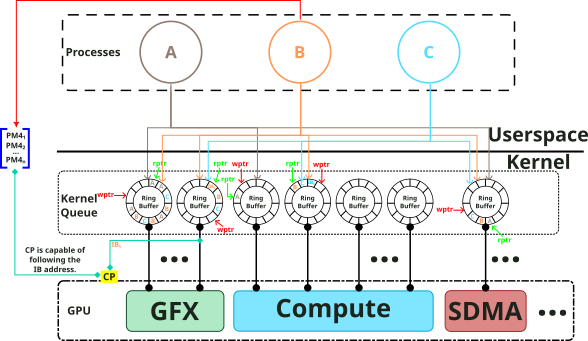
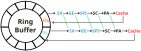
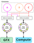
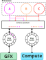

Ring Buffer¶
To handle communication between user space and kernel space, AMD GPUs use a ring buffer design to feed the engines (GFX, Compute, SDMA, UVD, VCE, VCN, VPE, etc.). See the figure below that illustrates how this communication works:

Ring buffers in the amdgpu work as a producer-consumer model, where userspace acts as the producer, constantly filling the ring buffer with GPU commands to be executed. Meanwhile, the GPU retrieves the information from the ring, parses it, and distributes the specific set of instructions between the different amdgpu blocks.
Notice from the diagram that the ring has a Read Pointer (rptr), which indicates where the engine is currently reading packets from the ring, and a Write Pointer (wptr), which indicates how many packets software has added to the ring. When the rptr and wptr are equal, the ring is idle. When software adds packets to the ring, it updates the wptr, this causes the engine to start fetching and processing packets. As the engine processes packets, the rptr gets updates until the rptr catches up to the wptr and they are equal again.
Usually, ring buffers in the driver have a limited size (search for occurrences
of amdgpu_ring_init()). One of the reasons for the small ring buffer size is
that CP (Command Processor) is capable of following addresses inserted into the
ring; this is illustrated in the image by the reference to the IB (Indirect
Buffer). The IB gives userspace the possibility to have an area in memory that
CP can read and feed the hardware with extra instructions.
All ASICs pre-GFX11 use what is called a kernel queue, which means the ring is allocated in kernel space and has some restrictions, such as not being able to be preempted directly by the scheduler. GFX11 and newer support kernel queues, but also provide a new mechanism named user queues, where the queue is moved to the user space and can be mapped and unmapped via the scheduler. In practice, both queues insert user-space-generated GPU commands from different jobs into the requested component ring.
Enforce Isolation¶
备注
After reading this section, you might want to check the Process Isolation page for more details.
Before examining the Enforce Isolation mechanism in the ring buffer context, it is helpful to briefly discuss how instructions from the ring buffer are processed in the graphics pipeline. Let’s expand on this topic by checking the diagram below that illustrates the graphics pipeline:

In terms of executing instructions, the GFX pipeline follows the sequence: Shader Export (SX), Geometry Engine (GE), Shader Process or Input (SPI), Scan Converter (SC), Primitive Assembler (PA), and cache manipulation (which may vary across ASICs). Another common way to describe the pipeline is to use Pixel Shader (PS), raster, and Vertex Shader (VS) to symbolize the two shader stages. Now, with this pipeline in mind, let's assume that Job B causes a hang issue, but Job C's instruction might already be executing, leading developers to incorrectly identify Job C as the problematic one. This problem can be mitigated on multiple levels; the diagram below illustrates how to minimize part of this problem:

Note from the diagram that there is no guarantee of order or a clear separation between instructions, which is not a problem most of the time, and is also good for performance. Furthermore, notice some circles between jobs in the diagram that represent a fence wait used to avoid overlapping work in the ring. At the end of the fence, a cache flush occurs, ensuring that when the next job starts, it begins in a clean state and, if issues arise, the developer can pinpoint the problematic process more precisely.
To increase the level of isolation between jobs, there is the "Enforce Isolation" method described in the picture below:

As shown in the diagram, enforcing isolation introduces ordering between submissions, since the access to GFX/Compute is serialized, think about it as single process at a time mode for gfx/compute. Notice that this approach has a significant performance impact, as it allows only one job to submit commands at a time. However, this option can help pinpoint the job that caused the problem. Although enforcing isolation improves the situation, it does not fully resolve the issue of precisely pinpointing bad jobs, since isolation might mask the problem. In summary, identifying which job caused the issue may not be precise, but enforcing isolation might help with the debugging.
Ring Operations¶
-
unsigned int amdgpu_ring_max_ibs(enum amdgpu_ring_type type)¶
Return max IBs that fit in a single submission.
Parameters
enum amdgpu_ring_type typering type for which to return the limit.
-
int amdgpu_ring_alloc(struct amdgpu_ring *ring, unsigned int ndw)¶
allocate space on the ring buffer
Parameters
struct amdgpu_ring *ringamdgpu_ring structure holding ring information
unsigned int ndwnumber of dwords to allocate in the ring buffer
Description
Allocate ndw dwords in the ring buffer. The number of dwords should be the sum of all commands written to the ring.
Return
0 on success, otherwise -ENOMEM if it tries to allocate more than the maximum dword allowed for one submission.
-
void amdgpu_ring_alloc_reemit(struct amdgpu_ring *ring, unsigned int ndw)¶
allocate space on the ring buffer for reemit
Parameters
struct amdgpu_ring *ringamdgpu_ring structure holding ring information
unsigned int ndwnumber of dwords to allocate in the ring buffer
Description
Allocate ndw dwords in the ring buffer (all asics). doesn't check the max_dw limit as we may be reemitting several submissions.
-
void amdgpu_ring_insert_nop(struct amdgpu_ring *ring, uint32_t count)¶
insert NOP packets
Parameters
struct amdgpu_ring *ringamdgpu_ring structure holding ring information
uint32_t countthe number of NOP packets to insert
Description
This is the generic insert_nop function for rings except SDMA
-
void amdgpu_ring_generic_pad_ib(struct amdgpu_ring *ring, struct amdgpu_ib *ib)¶
pad IB with NOP packets
Parameters
struct amdgpu_ring *ringamdgpu_ring structure holding ring information
struct amdgpu_ib *ibIB to add NOP packets to
Description
This is the generic pad_ib function for rings except SDMA
-
void amdgpu_ring_commit(struct amdgpu_ring *ring)¶
tell the GPU to execute the new commands on the ring buffer
Parameters
struct amdgpu_ring *ringamdgpu_ring structure holding ring information
Description
Update the wptr (write pointer) to tell the GPU to execute new commands on the ring buffer (all asics).
-
void amdgpu_ring_undo(struct amdgpu_ring *ring)¶
reset the wptr
Parameters
struct amdgpu_ring *ringamdgpu_ring structure holding ring information
Description
Reset the driver's copy of the wptr (all asics).
-
int amdgpu_ring_init(struct amdgpu_device *adev, struct amdgpu_ring *ring, unsigned int max_dw, struct amdgpu_irq_src *irq_src, unsigned int irq_type, unsigned int hw_prio, atomic_t *sched_score)¶
init driver ring struct.
Parameters
struct amdgpu_device *adevamdgpu_device pointer
struct amdgpu_ring *ringamdgpu_ring structure holding ring information
unsigned int max_dwmaximum number of dw for ring alloc
struct amdgpu_irq_src *irq_srcinterrupt source to use for this ring
unsigned int irq_typeinterrupt type to use for this ring
unsigned int hw_prioring priority (NORMAL/HIGH)
atomic_t *sched_scoreoptional score atomic shared with other schedulers
Description
Initialize the driver information for the selected ring (all asics). Returns 0 on success, error on failure.
-
void amdgpu_ring_fini(struct amdgpu_ring *ring)¶
tear down the driver ring struct.
Parameters
struct amdgpu_ring *ringamdgpu_ring structure holding ring information
Description
Tear down the driver information for the selected ring (all asics).
-
void amdgpu_ring_emit_reg_write_reg_wait_helper(struct amdgpu_ring *ring, uint32_t reg0, uint32_t reg1, uint32_t ref, uint32_t mask)¶
ring helper
Parameters
struct amdgpu_ring *ringring to write to
uint32_t reg0register to write
uint32_t reg1register to wait on
uint32_t refreference value to write/wait on
uint32_t maskmask to wait on
Description
Helper for rings that don't support write and wait in a single oneshot packet.
-
bool amdgpu_ring_soft_recovery(struct amdgpu_ring *ring, unsigned int vmid, struct dma_fence *fence)¶
try to soft recover a ring lockup
Parameters
struct amdgpu_ring *ringring to try the recovery on
unsigned int vmidVMID we try to get going again
struct dma_fence *fencetimedout fence
Description
Tries to get a ring proceeding again when it is stuck.
-
int amdgpu_ring_test_helper(struct amdgpu_ring *ring)¶
tests ring and set sched readiness status
Parameters
struct amdgpu_ring *ringring to try the recovery on
Description
Tests ring and set sched readiness status
Returns 0 on success, error on failure.